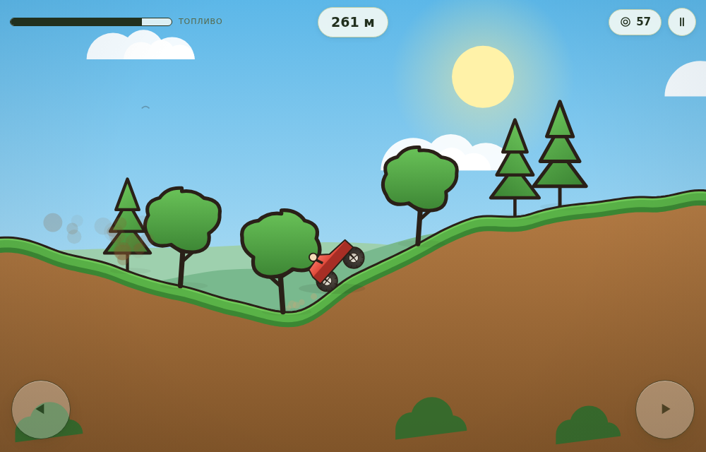
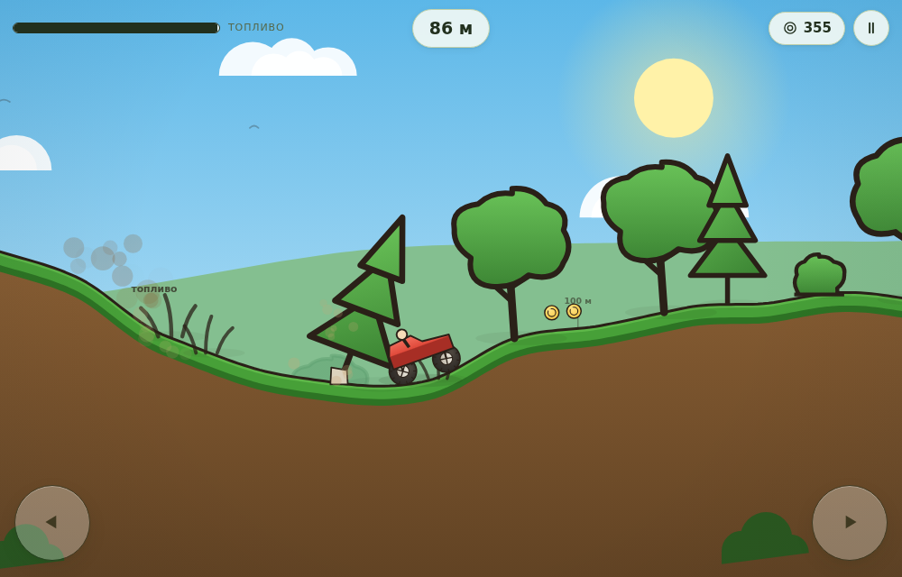
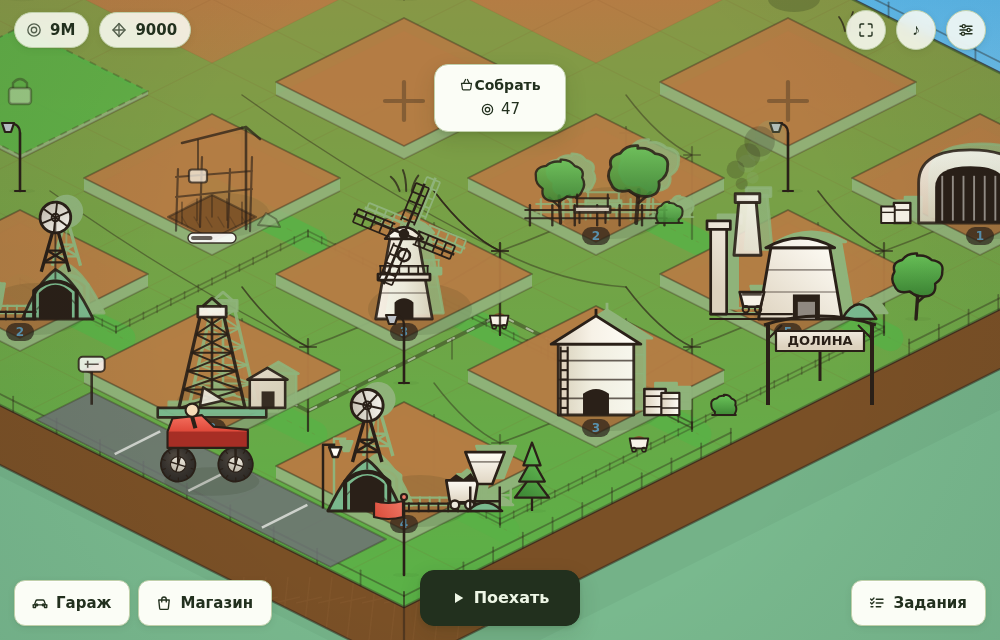
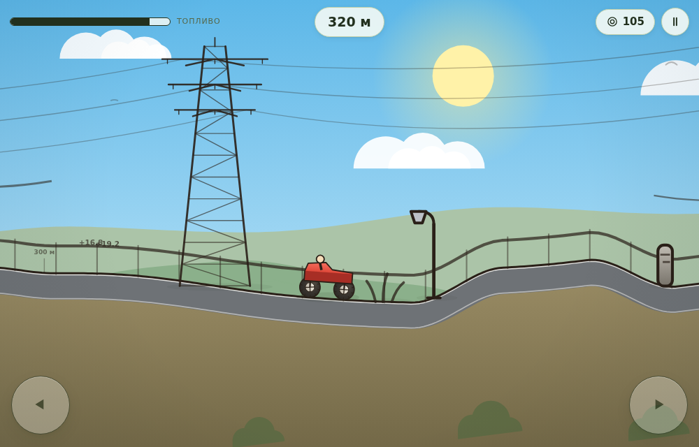
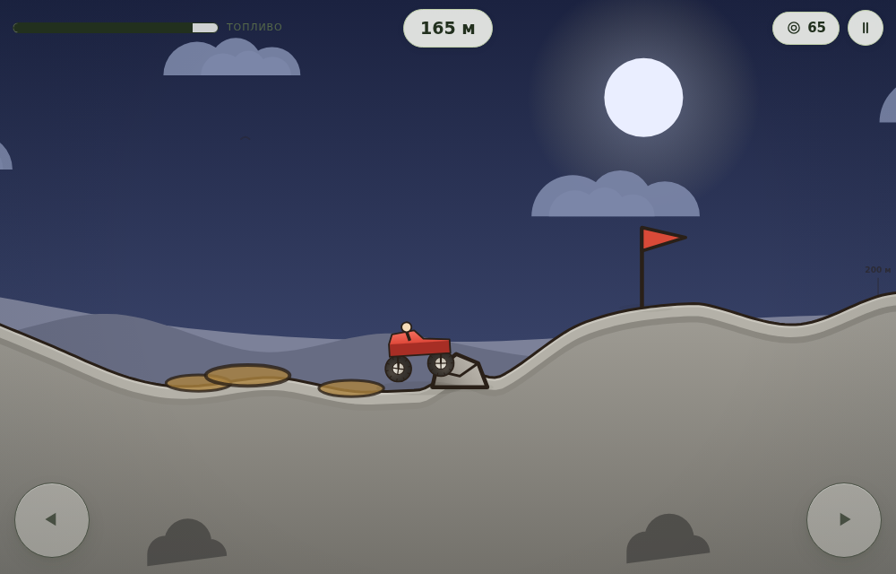
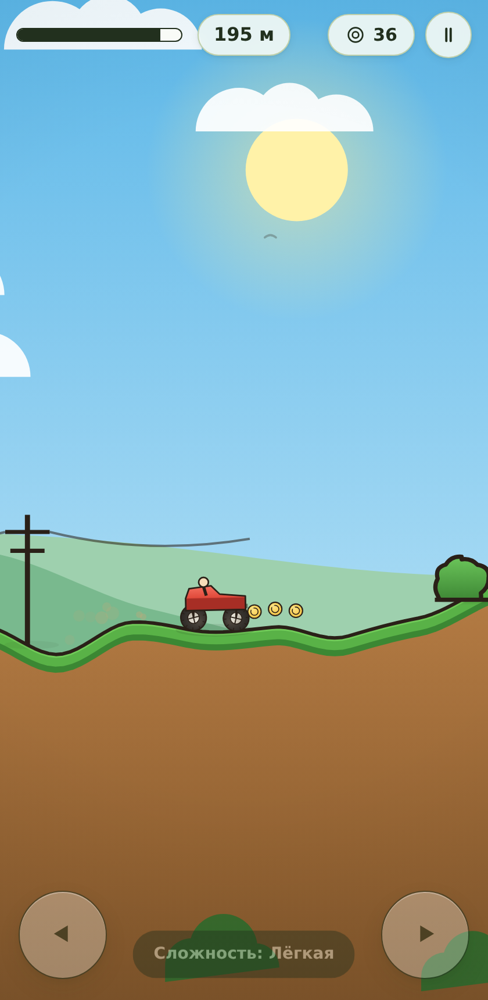

Холмы · монеты · шахты в долине
Браузерная игра из двух половин: заезды по холмам с настоящей физикой подвески и долина с шахтами, которые работают, пока тебя нет. Ничего не надо ставить — открыл ссылку и играешь, с телефона или с компьютера.

Две знакомые механики, сшитые в одну игру.
Кузов — твёрдое тело, колёса — точки на пружинах. Тяга крутит колесо, колесо отталкивается от земли, а отдача двигателя пытается поставить машину на дыбы. Никаких заранее записанных анимаций: всё считается физикой.
Изометрическая база: 24 участка, десять типов построек, стройка по таймерам. Время идёт по часам, а не по кадрам — закрыл игру, вернулся, всё достроено и добыча накопилась.
И у каждой своё правило, а не своя раскраска: в песке колёса проваливаются, в лесу сбитое дерево падает и ложится поперёк дороги, на хайвэе асфальт и ЛЭП, на Луне гравитация вполсилы.
Вопрос в самом начале: лёгкая, средняя, сложная. Трассы и физика одинаковые — меняются только деньги и сроки стройки, от трёх заездов до трёхсот до первой шахты.
Три темы: цветная, светлая «бумага» и тёмная. Переключается мгновенно.





Ванильный JavaScript и один холст. Ни одной библиотеки, ни одного шага сборки.
Вся графика рисуется кодом на canvas: холмы считаются из числа-семечка,
деревья и постройки собраны из кривых, а не из спрайтов. Звук тоже синтезируется
в браузере — двигатель это пила, частота которой идёт за оборотами ведущего колеса.
Поэтому игра открывается даже двойным щелчком по файлу, работает офлайн и ставится
на телефон как приложение.
.json и строка-код для
переноса между устройствами. Никаких серверов и аккаунтов.